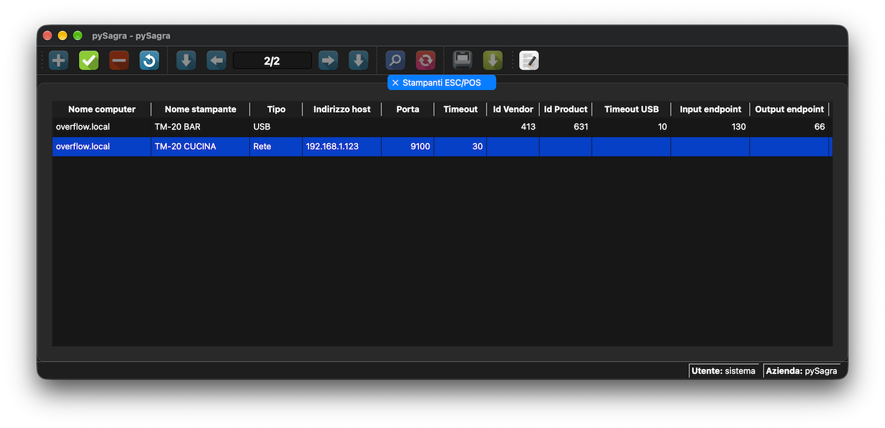

Stampanti ESC/POS
Le stampanti ESC/POS sono le stampanti termiche per scontrini, che il programma comanda direttamente, senza
passare dal driver del sistema operativo. Sono supportate solo stampanti USB o di rete, non sono supportate le stampanti
con collegamento seriale o di altro tipo. In questa scheda si elencano e impostano le stampanti, nella scheda Impostazione stampa ordini
ne viene determinato l'eventuale utilizzo.

Impostazioni delle stampanti Esc/Pos:
- Nome computer: il computer a cui è collegata la stampante USB; viene proposto il nome del computer corrente.
Una stampante di rete non dipende dal computer, se il nome è valorizzato viene ignorato
- Nome stampante: il nome con cui la stampante si identifica e si sceglie nelle impostazioni di stampa. Non può
essere uguale a quello di un'altra stampante
- Tipo stampante: USB o Rete. Il tipo abilita solo i suoi parametri e propone i valori
predefiniti per quel tipo; i parametri dell'altro tipo restano vuoti e non si possono modificare. Cambiando tipo, quelli del tipo
precedente vengono svuotati
Per una stampante di rete:
- Indirizzo host: l'indirizzo IP della stampante
- Porta: di solito 9100
- Timeout connessione: quanti secondi aspettare la stampante prima di dare errore per mancata connessione
Per una stampante USB:
- Id Vendor e Id Product: i due numeri che identificano il modello di stampante; si trovano nel
manuale o nelle informazioni del sistema sui dispositivi USB
- Timeout USB, Input endpoint e Output endpoint: parametri della comunicazione USB;
i valori proposti vanno bene per la maggior parte delle stampanti
Cancellare una stampante non cancella le impostazioni di stampa che la usano: restano senza stampante, e
quella copia va in anteprima finché non se ne sceglie un'altra.
Inizio pagina